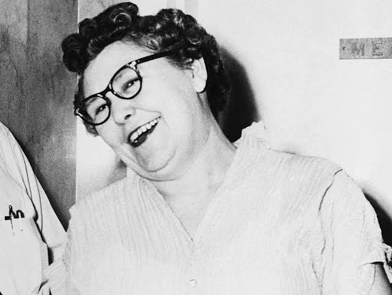

|  |
Nannie Doss (născută pe 4 noiembrie 1905 – d. 2 iunie 1965) a fost o criminală în serie americană , responsabilă pentru moartea a 11 persoane între 1927 și 1954. Doss a fost cunoscută și sub numele de Bunica Chicotitoare , Ucigașul de Inimi Singure , Văduva Neagră și Doamna cu Barba Albastră. |
| „Cu câteva momente înainte să apară la televizor pentru a fi intervievată, cameramanul i-a sugerat lui Nannie să-și scoată ochelarii și să zâmbească în fața camerei, glumind: «Poate ți-ai lua un alt soț dacă arăți bine». Ea a răspuns: «Nu-i așa că acesta este adevărul pe moarte ?», apoi a râs la propriul joc de cuvinte. Ea a fost cea mai importantă știre din Oklahoma în 1954 și știa asta.” – Tori Telfer, Ucigașele de doamne. | Mulți criminali în serie, precum Bundy, fac furori nu doar pentru crimele lor, ci și pentru capacitatea lor de a trece drept normali, non-violenți și chiar fermecători. Pentru a ilustra acest lucru cu Nannie Doss, această analiză va fi diferită de celelalte articole anormale, deoarece vom analiza opiniile contradictorii ale psihiatrilor care au evaluat-o pe Nannie pentru a determina dacă era nebună sau nu.Mulți criminali în serie, precum Bundy, fac furori nu doar pentru crimele lor, ci și pentru capacitatea lor de a trece drept normali, non-violenți și chiar fermecători. Pentru a ilustra acest lucru cu Nannie Doss, această analiză va fi diferită de celelalte articole anormale, deoarece vom analiza opiniile contradictorii ale psihiatrilor care au evaluat-o pe Nannie pentru a determina dacă era nebună sau nu. |
| În orice caz, era o parodie a gospodinei din anii 1950, aparent obsedată de căsătorie și gătit, bazându-se atât pe cele mai sexy, cât și pe cele mai ageiste presupuneri despre cum ar trebui să arate pericolul. Împodobită cu perlele ei, cu părul ondulat, a copleșit știrile flirtând în fața camerelor de filmat, făcând glume morbide și prezentând crimele sale ca fiind nimic mai mult decât o întâmplare în drumul spre găsirea domnului potrivit. Era amețită să vorbească despre crimele soților ei dezamăgitori, prezentând lucrurile ca și cum ar fi avut dreptul să le ia viața. | |
 „Cel mai deștept criminal pe care l-am intervievat vreodată” „Cel mai deștept criminal pe care l-am intervievat vreodată” |
Doss a mărturisit că a ucis patru dintre soții ei, mama ei, sora ei, nepotul ei și soacra ei. Statul Oklahoma și-a concentrat cazul doar pe Samuel Doss. Nannie Doss a fost urmărită penal de J. Howard Edmondson , care a devenit ulterior guvernator al Oklahoma-ului . Ea a pledat vinovată pe 17 mai 1955 și a fost condamnată la închisoare pe viață ; statul nu a aplicat pedeapsa cu moartea din cauza sexului ei. Doss nu a fost niciodată acuzată de celelalte decese. A murit de leucemie în secția de spital a Penitenciarului de Stat din Oklahoma în 1965. Este înmormântată în Parcul Memorial Oak Hill din McAlester, Oklahoma. |